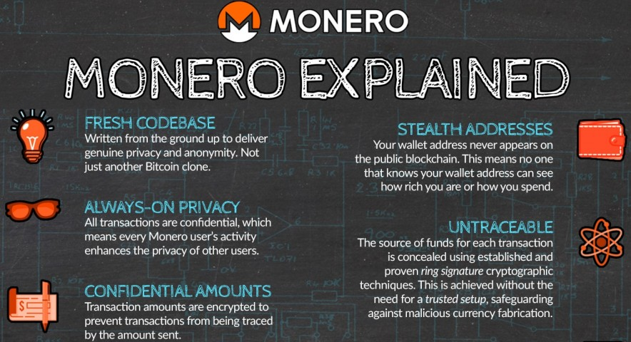
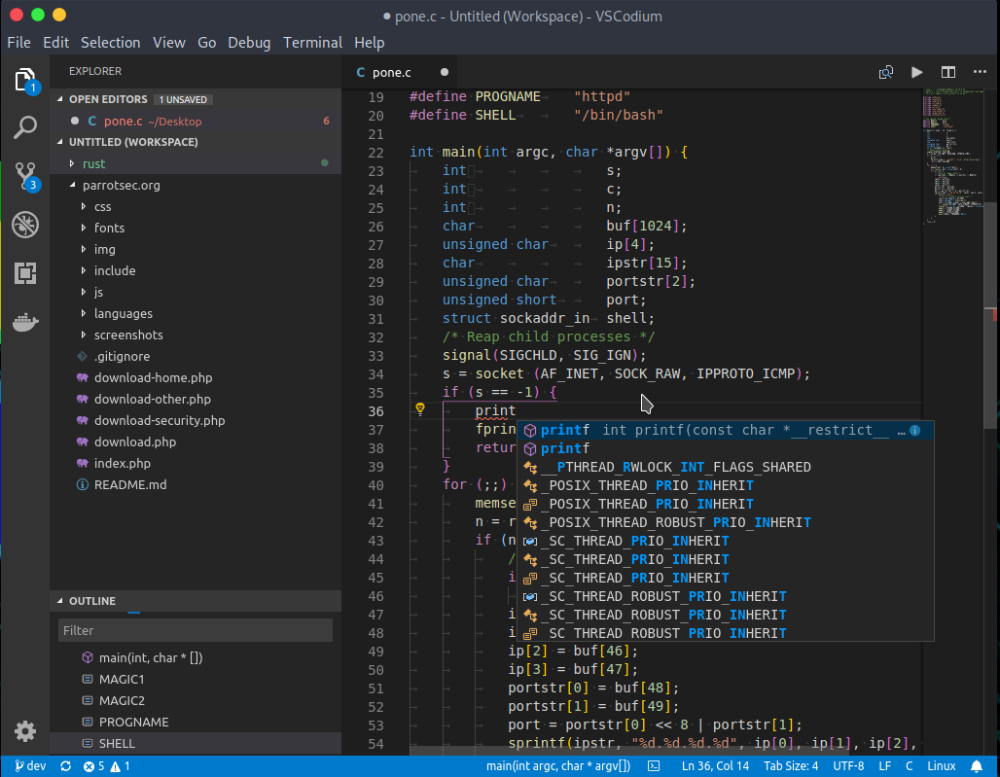
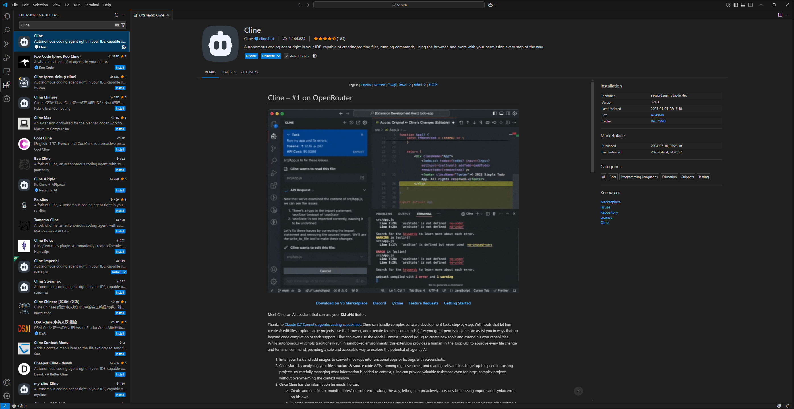
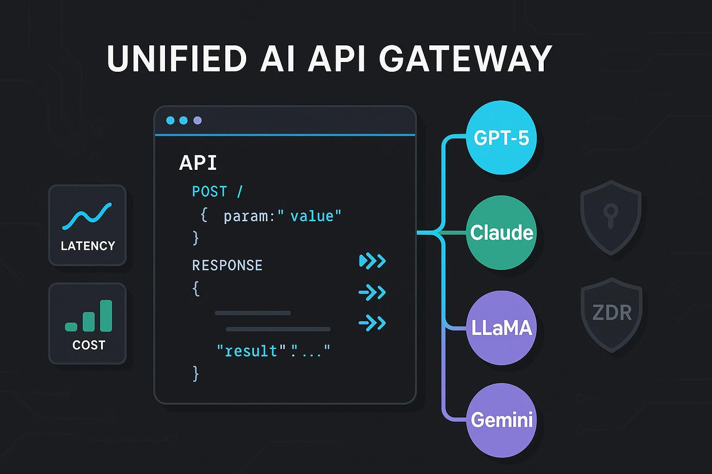

Anonymous Vibecoding: The Ultimate Zero-KYC Guide
Introduction
AI code editors are a total game changer. Not only do they fast-track the development of new apps, but they also unlock a new era of experimentation and prototyping, a trend often called "vibecoding."
The biggest shift, however, is accessibility: they allow creative people to bypass technical barriers and finally bring their ideas to cyberspace.
What are AI code editors?
Code editors, and their more advanced counterparts known as IDEs (Integrated Development Environments), offer a unified interface with all the tools needed to build applications. They function as an all-in-one workspace, but you usually need to be technical to use them.
Now, they are enhanced with AI. In the sidebar, an agent acts as the orchestrator. You type instructions in plain English, and the agent translates them into code. It's like having a developer sitting next to you, bridging the gap between your requirements and the actual build. You no longer need to be technical to create digital applications.
Right now, the clear market leaders are Cursor, Windsurf, and Replit.
Their pricing is usage-based. You load up a balance and pay for every prompt you send. You can also switch between models on the fly. Premium AIs cost more but handle complex tasks better, while standard ones save you money. You pay only for the intelligence you need.
The Catch
To use these tools, you are forced to hand over your legal identity. You can't just use them anonymously; you must register an account and provide sensitive data such as:
- Legal Name
- Address
- Credit Card Information
On top of that, they log your IP address and usually block privacy tools like Tor and VPNs.
This destroys true freedom. You cannot safely build disruptive tools or challenge the status quo when every prompt you type is linked to your "legal" identity. Knowing that your work is permanently traceable forces you to self-censor, limiting your creativity and potential.
What we will set up
In this tutorial, we will replicate the exact setup of market leaders like Cursor and Windsurf, but without the identity tracking.
Anonymity without performance and ease of use cannot win in the long run. You will keep access to all AI models, including the best-performing commercial ones like Claude and ChatGPT. Crucially, we preserve the seamless user experience found in commercial tools. You get the same power and ease of use, but you are untraceable.
However, there is a caveat. Since we still continue to rely on remote models, any provider you choose (whether it is OpenAI, Anthropic, or others) will continue to receive your code and prompts. They might use them for training or steal your idea. So in that sense, there is no difference from using commercial tools. It is simply too expensive and complex for most people to run models locally, and for now, if we talk purely about performance, proprietary models are still the best and we need to be pragmatic.
But, like we said, with the setup we will use, they won't be able to trace anything back to your "legal" identity. In a world of AI, the code itself holds less value than your freedom to build it anonymously.
Note: We cover running AI models locally or on controlled servers in our Self-Host AI Models tutorial.
Step 1 - Getting Monero (XMR)
Monero is a private and untraceable cryptocurrency, essentially a "dark bitcoin." When you transact in Monero, nobody can see who you are transacting with or the amounts involved. (getmonero.org)
First, get yourself a wallet (download) and backup your seed safely.
Option 1: The KYC Route (If available)
Buy Monero from a centralized exchange if it is available in your region.
- Withdraw immediately to the wallet you just created.
- Critical: The exchange knows your "legal" identity and will link it to the withdrawal address you used. Never publish this address online and never reuse it (always generate a new "sub-address" for new withdrawals).
- Once the funds are in your wallet, the link is broken. Future transactions are untraceable and cannot be linked back to you.
Option 2: The No-KYC Route
If you can't use a standard exchange (or just don't want to), use an instant swap service.
- How: Use a site like ChangeNow.
- You send them Bitcoin (or almost any other crypto), and they send the equivalent in XMR (minus a small fee) straight to the wallet you just created.
- No account or ID is required.
Step 2 - Protect your IP
Even if you use Monero and don't provide any personal info, your IP address can and will still be used to trace you. So you must hide it.
Option 1: VPN
For low to moderate threat models, use a VPN with a kill switch enabled to prevent any leaks.
Mullvad is a good one; they don't require any personal info and they accept Monero.
Option 2: Tor
For a high threat model, use Tor. The Tor Browser alone won't be enough since our AI code editor won't be running in a browser. You want your entire traffic to be routed through Tor.
For this, you can use Whonix in a virtual machine or Tails on a USB stick. They force Tor for the entire operating system, so your traffic can never leak.
No matter which option you choose, ensure that every single step you take from now on is routed strictly through your VPN or Tor connection. See our Tor vs VPN guide to help you decide.
Step 3 - Protect your computer
Everything we've done in Step 1 and Step 2 won't matter if you use closed-source operating systems like Windows or macOS. These operating systems are proprietary; they track user activity, and features like Windows Recall are designed to capture screenshots of your activity.
Ideally, you should run Linux with minimal or no proprietary software. Ubuntu or Debian are the best options for beginners.
Step 4 - Install VSCodium
Cursor, Windsurf, and similar tools are all based on Microsoft's proprietary software, Visual Studio Code.
VSCodium is a free, open-source version of Visual Studio Code with all of Microsoft's telemetry removed.
Download and install it.
Step 5 - Install Cline
Cline is a free, open-source AI agent that transforms VSCodium from a basic code editor into a fully autonomous AI editor. (GitHub)
- In VSCodium, click the Extensions icon on the left sidebar.
- Search for "Cline" and install it.
Cline will now appear in the sidebar. You do not need to create an account. Simply select the option to configure your own API key (should be "Bring my own API key"). Leave it there for now.
Step 6 - Get an API Key on OpenRouter.ai
Cline itself is just an empty agent; it needs to connect to an AI model to function. For this, we must choose a provider, get an API key, and add funds to our balance.
OpenRouter is a unified interface that gives you access to almost every AI model (including Claude and GPT) through a single API key and supports crypto payments. (openrouter.ai)
Create an account
Sign up to OpenRouter.ai with a fake email. If you want a reusable one with a good privacy track record, use Tuta.
Note: Tuta often blocks signups from VPNs or Tor to prevent bot spam. You can bypass this by upgrading to a paid account. Since Tuta does not accept crypto directly, you must buy a Tuta Gift Card using Monero from one of these resellers, and then redeem it to upgrade your account anonymously.
Add a fake address
OpenRouter requires an address for compliance purposes. Use a fake address generator; they don't verify it in any way.
Install MetaMask
MetaMask is a free, open-source, and self-custodial wallet that is supported by OpenRouter to let you pay for credits. (metamask.io)
Install the MetaMask browser extension. Do not log in with Google or any other account; strictly select "Create a new wallet" to generate your own secret key. (download)
Exchange Monero for Ethereum
On ChangeNow, swap your Monero for Ethereum (ETH) (or any other crypto supported by MetaMask) and send it to your MetaMask address. (swap XMR to ETH)
Because your MetaMask wallet is anonymous and the funds originated from Monero, the money is effectively untraceable to you.
Get credits
- Go to openrouter.ai/settings/credits.
- Check "Use crypto" and enter the amount you want to add.
- Click "Purchase".
Choose the MetaMask option. The payment window will trigger your extension; connect your wallet and confirm the transaction. After a short wait, your balance will be credited.
Get an API key
Go to openrouter.ai/settings/keys and create a new API key. Copy it immediately.
Step 7 - Finish configuring Cline
Return to Cline where we left off.
- API Provider: Select "OpenRouter", then paste your API key below.
- Model: Choose a default model of your choice (you can change this later in the settings).
- Optional: Enable "Thinking" for better performance and adjust the token amount if desired.
Step 8 - Start Vibecoding
You are all set.
Click the Cline icon in the left sidebar to open the chat interface. You can now type your first prompt (e.g., "Create a simple snake game in Python").
Note: By default, Cline will ask for your permission before running any command or editing any file. This is a security feature. You can approve actions individually or configure "Auto-approve" settings if you want it to work faster.